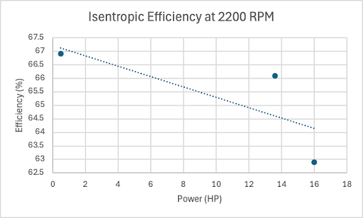
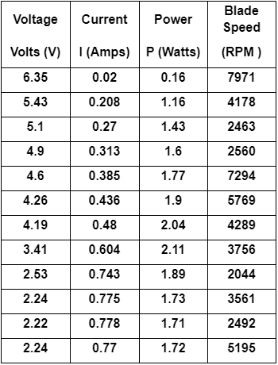
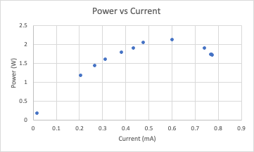
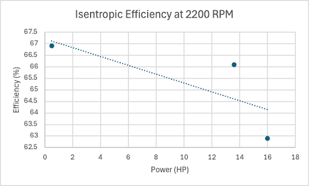
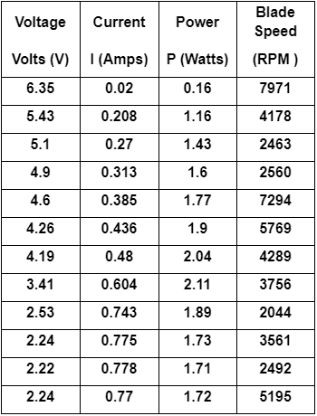
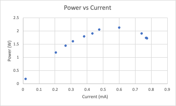

Project Overview
The turbine structure featured a single central dowel connecting a top and bottom plate, reinforced with eye screws, foaming glue, and fishing line secured via hooks for enhanced durability. The blades, designed with a three-blade configuration at a 17.2° angle of attack, were optimized for efficiency despite a minor flaw in tip design (flat-edged instead of curved). Testing revealed a peak power output of 2.11 watts at 3.41V and 0.604A, with blade speeds ranging from 2044 to 7971 RPM, surpassing the 2-watt threshold. However, the structure’s stiffness measured 7.4046 N/mm, falling short of the 20 N/mm requirement, though it withstood loads up to 1100 grams. The turbine achieved an efficiency of 34%, aligning with average performance expectations for the design constraints.
A primary challenge was achieving the required stiffness of 20 N/mm. Despite reinforcements, our structure’s stiffness measured 7.4046 N/mm, indicating a need for further material or design optimization. Another issue was inconsistent blade speed readings (e.g., sudden jumps from 2560 to 7294 RPM), likely due to an unstable tachometer setup during testing. We addressed this by stabilizing the measurement setup, but it underscored the importance of precision in data collection. Additionally, the flat-edged blade tips reduced aerodynamic efficiency; a curved tip design would have captured more wind, potentially boosting power output.
The design underwent several iterations to meet the project’s goals. Initially, a three-dowel structure exceeded the weight limit, prompting a shift to a single-dowel design with added fishing line for stability. These adjustments highlight the importance of adaptability and teamwork, as our group collaborated outside class hours to refine the design and achieve a successful outcome.